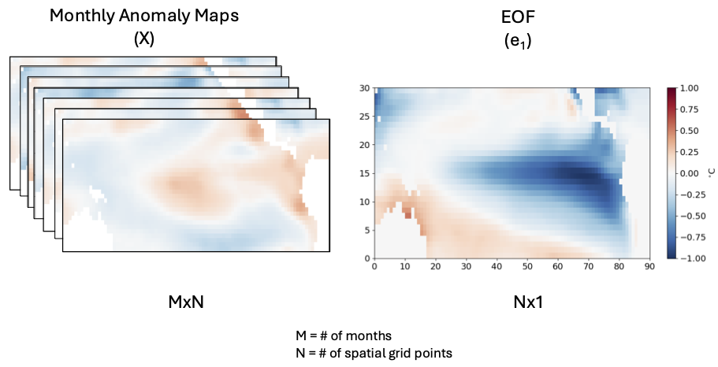
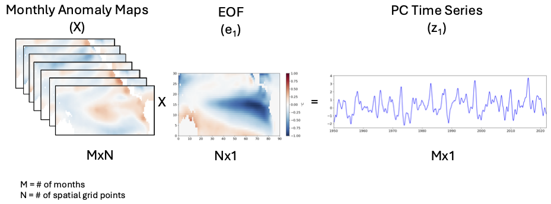

EOFs via Eigenanalysis#
In this section, we will discuss why an eigenanalysis of the covariance matrix (PCA or empirical orthogonal functions (EOFs) analysis) is a sensible approach to identifying patterns of variability in climate and geophysical data. There are many other approaches, but in this course, we will restrict ourselfves to PCA.
First, a few notes on terminology:
EOF stands for Empirical Orthogonal Functions
PCA stands for Principal Component Analysis
EOF analysis and PCA are practically the same thing
PCA is the more generally used term, and just implies converting a matrix into sets of linearly uncorrelated variables, called principle components.
EOF analysis normally refers to finding the principle components that maximize the variance explained (i.e., a subset of all PC’s)
Setting up the Problem…#
Say we have a data matrix X which is \([M x N]\). For now, let the rows denote different times and the columns different spatial locations (although this is not required for the actual application).
The goal of EOF analysis is to decompose X into a set of spatial patterns, i.e, orthogonal eigenvectors, \(\mathbf{e_i}\)’s, that explain the most variance of X. In other words, we want to maximize the resemblance of \(\mathbf{e_1}\) (dimension \([N x 1]\), the spatial dimension) to the data, that is, find the \(\mathbf{e_1}\) that explains the most variance.
Figure 26 provides a visualization of what we are trying to accomplish. X is a data matrix consisting of sea-level pressure (SLP) in mb at \(N\) points in space and \(M\) points in time.
{kind=link}

Fig. 26 Visualizing EOF/PC spatial patterns using monthly SST (\(^{\circ}\)C) anomalies. X is the data matrix and \(\mathbf{e_1}\) is the eigenvector that explains the largest fraction of the variability in X.#
The first eigenvector, \(\mathbf{e_1}\), shows the pattern that explains the most variance in X. Note that just like the unit eigenvectors of 2-D or 3-D space, where \(\mathbf{e_1} = (1,0)\) and \(\mathbf{e_1} = (-1,0)\) are both legitimate eigenvectors, \(\mathbf{e_1}\) describing the variance of X can look like the pattern in Figure 26 or it can look like -1 x this pattern.
Maximizing the resemblance of \(\mathbf{e_1}\) onto X = Eigenanalysis of C!#
The resemblance of the \(\mathbf{e_1}\) to the data, X, is measured by the inner product of \(\mathbf{e_1}\) with X (this is also called the projection of \(\mathbf{e_1}\) onto X).
If we want to maximize this resemblance, there are a few steps that we should take:
we should square the resemblance to ensure that positive and negative resemblances are counted the same (as in the case of linear regression where we square the errors).
we should divide the resemblance by \(M\) or \(M-1\) to ensure that the resemblance is independent of the number of observations.
we should normalize the eigenvector, \(\mathbf{e_1}\), to have unit length to make the resemblance independent of the magnitude of \(\mathbf{e_1}\). Otherwise the resemblance can be made arbitrarily large by increasing the magnitude of \(\mathbf{e_1}\).
If one follows these rules, the resemblance of \(\mathbf{e_1}\) to the data turns out to be:
In order to satisfy matrix multiplication rules, this can be re-written as:
This is equivalent to maximizing,
subject to the constraint that \(\mathbf{e_1}\) is a unit vector.
If we assume the maximum value of this squared resemblance is \(\lambda_1\),
we find that the above equation has the same form as the eigenvalue problem we discussed in the previous section. That is, this equation becomes,
Thus, \(\mathbf{e_1}\) must be an eigenvector of C with corresponding eigenvalue \(\lambda_1\)! Hence, we can find \(\mathbf{e_1}\) by “eigenanalyzing” C.
Key Points:#
The 1st eigenvector corresponds to the vector that explains the most variance in X and has the largest eigenvalue
The 2nd eigenvector corresponds to the vector that explains the second most variance in X and has the 2nd largest eigenvalue, etc.
The eigenanalysis of the covariance matrix transforms C into a different coordinate system where the “new” matrix is diagonal (\(\mathbf{\Lambda}\)).
In this new coordinate space, all of the variance is along the diagonal since the different vectors are orthogonal. Thus, the fraction of variance explained by the \(j\)th eigenvector is the corresponding eigenvalue \(\lambda_j\) divided by the sum of all of the eigenvalues, that is \(\frac{\lambda_j}{\sum_i \lambda_i}\)
Typically, EOFs are ordered by their corresponding \(\lambda\), such that EOF 1 explains the largest variance (largest \(\lambda\)) and the last EOF (typically the \(N\)th EOF) has the smallest.
No other linear combination of \(k\) predictors can explain a larger fraction of the variance than the first \(k\) EOF/PC’s!
Principal Component Time Series = Change of Basis#
So, we have seen that if X is \([M x N]\) where the rows denote different times and the columns different spatial locations, the eigenvectors correspond to the patterns describing the variability. But, as we saw in the Introduction to PCA, we can also generate corresponding principal component time series. How do we go about generating these time series?
The principal component time series, Z, are equivalent to mapping X into the new vector space spanned by the eigenvectors. We can do this by performing a linear transformation of X:
Figure 27 provides a visual representation of what this looks like for the sea-level pressure anomaly data.
{kind=link}

Fig. 27 Visualizing EOF/PC spatial patterns and time series using daily sea-level pressure (mb) anomalies. X is the data matrix and \(\mathbf{e_1}\) is the eigenvector that explains the largest fraction of the variability in X. \(\mathbf{z_1}\) is linear transformation of X onto the \(\mathbf{e_1}\) basis vector.#
Z can also be interpreted as the degree to which a particular day looks like the corresponding eigenvector pattern and has size \([M x 1]\) (the time dimension). So, if we know all the eigenvectors (EOFs) and the corresponding principal component time series (PCs), then we can reconstruct out original data matrix, X:
Steps for Computing EOFs/PCs#
For a data matrix X with size \([M x N]\) where the rows denote different times and the columns different spatial locations, we can find the EOFs/PCs using the following steps:
subtract the mean values along the sampling/time dimension of X
unless there are issues with data size and computation time, define C along the sampling/time dimension so you are have a covariance matrix with dimensions corresponding to the spatial dimensions \([N x N]\)
eigenanalyze C by diagonalizing the matrix
the first EOF is the eigenvector corresponding to the largest eigenvalue
to find the PC time series, transform the data onto the set of eigenvectors (PC’s should be the length of your sampling dimension)
the fraction of variance explained by the \(j\)th EOF/PC pair is \(\frac{\lambda_j}{\sum_i \lambda_i}\)
In the next section, we will take a look at an example and go through the above procedure step-by-step.